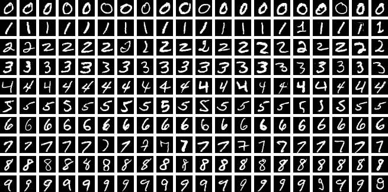
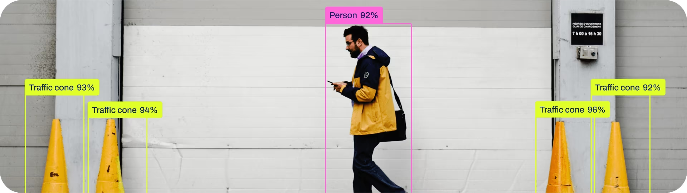
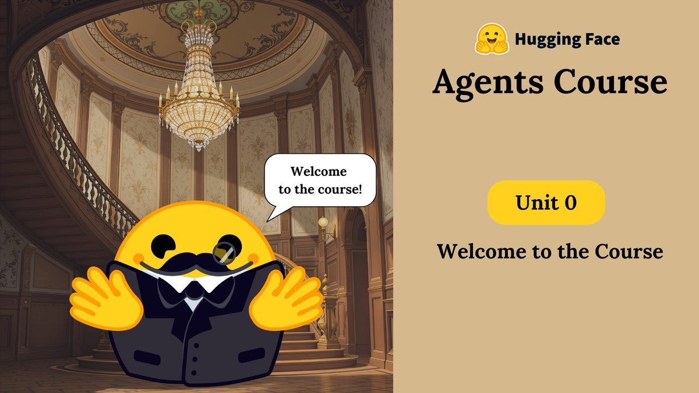
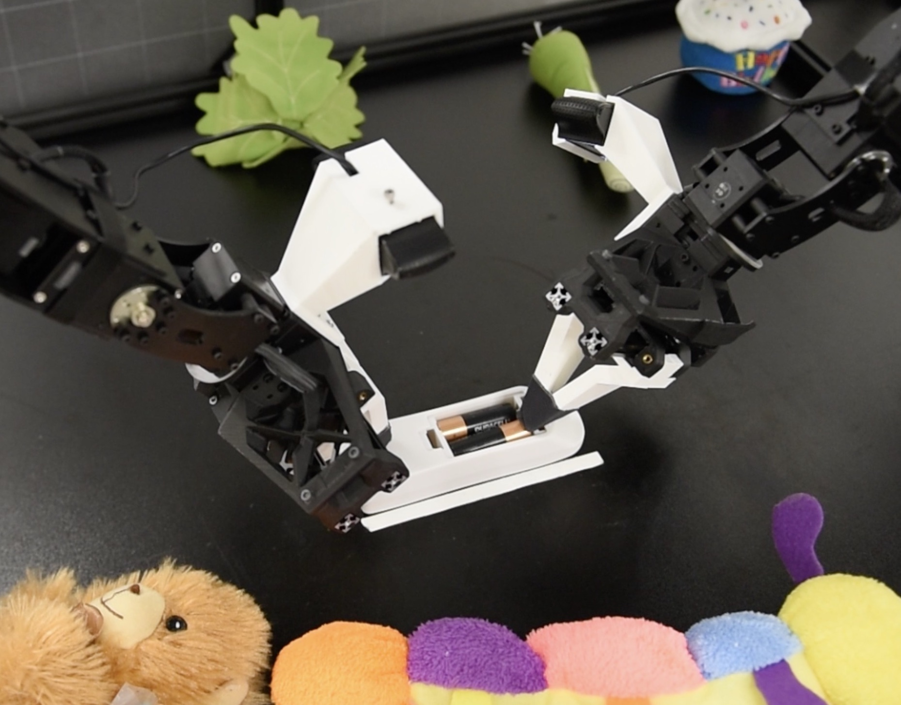

如果你想玩玩 AI，看看它能做什么，可以从一个小项目开始。让模型认出手写数字，在自己拍的照片里框出人和车，或者让它调用工具帮你处理事情，都可以试试。
这里整理了四个入门项目，涉及图像识别、目标检测、Agent 和机器人，附有代码、教程和演示。可以挑感兴趣的玩一玩。
MNIST：手写数字识别
MNIST 是经典的图像分类数据集，包含 0–9 的手写数字。Kaggle Digit Recognizer 比赛使用这些图片训练分类模型，根据预测结果计算成绩。

数据、代码与训练
比赛的 Data 页面 提供训练数据、测试数据和提交示例。每张 28×28 的灰度图片被展开为一行像素数据，训练数据附有数字标签。
Code 页面 有公开的 Notebook，包括使用 PyTorch 和 CNN 的实现，可以直接在 Kaggle 上运行。模型训练完成后，将测试集的预测结果保存为提交文件，就能提交到比赛页面。
跑通之后，也可以改改学习率、训练轮数或网络结构，看看准确率有什么变化，或者翻翻模型认错了哪些数字。
相关资料
- 3Blue1Brown 神经网络系列：用手写数字介绍神经网络、梯度下降和反向传播。
- PyTorch Learn the Basics：介绍数据加载、模型定义、自动求导与优化，示例使用 FashionMNIST 服饰分类数据。
YOLO：在自己的照片里检测物体
YOLO 可以找出图片中的物体，并标出类别和位置。一张街景照片里的人、汽车和自行车，会分别被检测框圈出来。
使用预训练模型，就可以处理自己的图片和视频。

运行检测
Ultralytics Quickstart 提供安装、模型加载和预测的代码示例，也有可以在浏览器中运行的 Google Colab 教程。
把示例图片换成自己拍的照片，就能看到模型给出的检测框、类别和置信度。视频也可以作为输入，模型会逐帧进行检测。
训练自己的模型
如果想检测自己关心的物体，可以使用带标注的数据训练模型。目标检测的标注包括物体类别和边界框。
Ultralytics 训练教程 提供训练与数据配置示例，也附有 COCO8 示例数据集。自定义数据可以使用已有的公开数据集，也可以由自己拍摄和标注。
分类、检测、分割及相关论文见计算机视觉。
Agent：让模型调用工具
给语言模型接上计算器、搜索或文件读取工具，它就可以在处理任务时调用这些工具，再根据返回结果继续回答。例如，搜索几份资料后整理答案，或者通过运行代码完成计算。
Hello Agents 提供中文教程和代码项目；Hugging Face Agents Course 包含工具调用、Agent 框架和实践教程。

ReAct 项目页 展示了推理、行动与环境反馈交替进行的例子。更多项目和相关工作见 Agent 方向。
机器人：看看机器人怎样学会操作
机器人可以通过人的操作示范学习动作。ACT / ALOHA 展示了双臂机器人完成操作任务的过程，也提供示范数据采集、模型训练与动作预测的代码。

LeRobot 整理了机器人学习的模型、数据集、训练代码和工具。公开数据中包含相机图像、机器人状态和动作序列，对应着机器人执行任务时的观察与动作。
模仿学习、VLA、仿真与机器人控制的相关资料见具身智能。
更多入门项目
Kaggle 上还有许多公开的数据集、比赛和 Notebook，涵盖图像、文本、表格预测等任务。感兴趣的题目、别人分享的实现，都可以成为下一个小项目的起点。
还有什么想做的？
也许你想做一个整理课程资料的工具，一个自己的网页，或者一个小游戏。
可以把想法告诉 TRAE、WorkBuddy、Claude Code、ZCode、Codex 等 Coding Agent，和它一起尝试实现。过程中有新的想法，也可以接着修改、慢慢完善。
相关工具与使用方法见AI 工具。